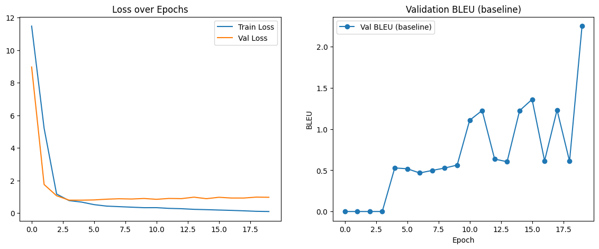

DSAN6600 Final: Manchu Learning
Manchu-English Machine Translation Project
Manchu-English Machine Translation
- Author: Christy Hsu
- Course: Neural Networks and Deep Learning (Fall 2025)
- Keywords: Neural Machine Translation, Data Curation, In-Context Machine Translation, Endangered Language
Intro

The Pipeline and Challenges: How we learn (to translate) Manchu?
- Digitization
- Typing
- OCR
- Transliteration
- Translation
Literature Review
Seo et al., “Mergen: The First Manchu-Korean Machine Translation Model Trained on Augmented Data.”1
Lee et al., “ManNER & ManPOS: Pioneering NLP for Endangered Manchu Language.”2
Pei et al., Understanding In-Context Machine Translation for Low-Resource Languages: A Case Study on Manchu3
Choi et al., “Finetuning Vision-Language Models as OCR Systems for Low-Resource Languages: A Case Study of Manchu.” (2025)
Data and Methods
Parallel Corpora
- Curated
The Dream of the Red Chamber (Cao, 1792)
- source: Sibe translation (1993, Mu)
- reference: English translation (1891, Joly)
- size: 262 sentences, vocab size: 669 words
- Validation set
Old Cathay
- src & ref: manc.hu
- size: 107 sentence pairs
- Linguistic Resource
Norman, A Comprehensive Manchu-English Dictionary
- src & ref: manc.hu
- size: 21,628 Manchu entries with English defintiton
Overview: Models
Goal again: input Manchu sentence, output English sentence
- Attempt 0: Seq2seq (2 GRUs) + Attention
- Attempt 1: manchuBERT + LSTM
- Attempt 2: manchuBERT + mBART
- Attempt 3: prompt engineering with dictionary + google.colab.ai in-context learning
manchuBERT
# EN: this is a pretty good name
predict_masked(
'ere gebu umesi [MASK]', tokenizer, model,
reference_text = 'ere gebu umesi sain'
)
# Input text:
# ere gebu umesi [MASK].
# ------------------------------
# Top 5 predictions:
# - wesihun
# - ambula
# - .
# - sain
# - saikan
# ------------------------------
# Reference: ere gebu umesi sain
manchuBERT^[@SeemdogManchuBERTHugging]
- embedding vector: `768`
- trained on `195,611` monoligual sentences (after augmentation: `5,207,069`)Results
Auto and Human Evaluation of MT
- BLEU
| Model | Test BLEU |
|---|---|
| 2 GRUs | 0.000 |
| manchuBERT + LSTM | 0.136 |
| manchuBERT + mBART | 0.842 |
| dictionary + google.colab.ai | 1.203 |
- Translation Examples
Source: enteke erde uthai feksime jifi ainambi
Reference: what have you run over to do at this early hour
- Prediction (manchuBERT + mBART): *why did you come back again for*
- Prediction (dict + colan.ai): *why does he come so early immediately after getting up*- Translation Examples

- Translation Examples
Source: ume jilidara
Reference: dont be angry
Prediction: what you
Source: tere oci teni jihengge ainahai terei jalin simbe aldangga tuwara giyan binio
Reference: how could I ever distance you on her account while she has only recently come
Prediction: but will will that to to to to to to toSource: giyan de uthai uttu
Reference: this goes without saying
Prediction: SOS SOS SOS SOS SOS SOS SOS SOS SOS SOS SOS SOS SOS SOS SOS SOS SOS SOS SOS SOS SOS SOS SOS SOS SOS SOS SOS SOS SOS SOSDiscussion and Reflection
- Chung et al., “Finetuning Vision-Language Models as OCR Systems for Low-Resource Languages: A Case Study of Manchu.” (2025)4
References
Chung, Yan Hon Michael, and Donghyeok Choi. 2025. “Finetuning Vision-Language Models as OCR Systems for Low-Resource Languages: A Case Study of Manchu.” arXiv. https://doi.org/10.48550/arXiv.2507.06761.
Lee, Sangah, Sungjoo Byun, Jean Seo, and Minha Kang. 2024. “ManNER & ManPOS: Pioneering NLP for Endangered Manchu Language.” In Proceedings of the 2024 Joint International Conference on Computational Linguistics, Language Resources and Evaluation (LREC-COLING 2024), 11030–39.
Pei, Renhao, Yihong Liu, Peiqin Lin, François Yvon, and Hinrich Schuetze. 2025. “Understanding in-Context Machine Translation for Low-Resource Languages: A Case Study on Manchu.” In Proceedings of the 63rd Annual Meeting of the Association for Computational Linguistics (Volume 1: Long Papers), edited by Wanxiang Che, Joyce Nabende, Ekaterina Shutova, and Mohammad Taher Pilehvar, 8767–88. Vienna, Austria: Association for Computational Linguistics. https://doi.org/10.18653/v1/2025.acl-long.429.
Seo, Jean, Sungjoo Byun, Minha Kang, and Sangah Lee. 2024. “Mergen: The First Manchu-Korean Machine Translation Model Trained on Augmented Data,” no. arXiv:2311.17492 (January). https://doi.org/10.48550/arXiv.2311.17492.